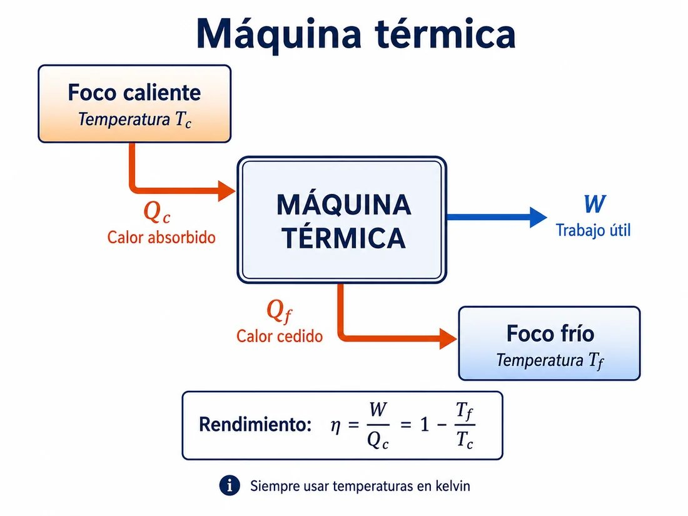
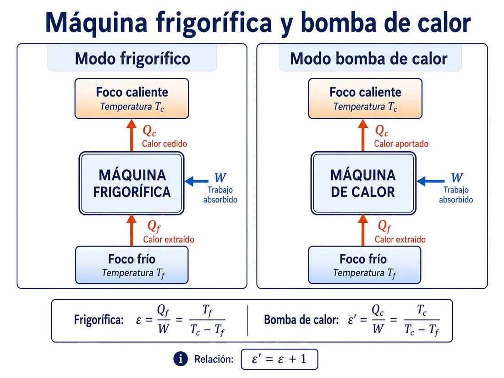
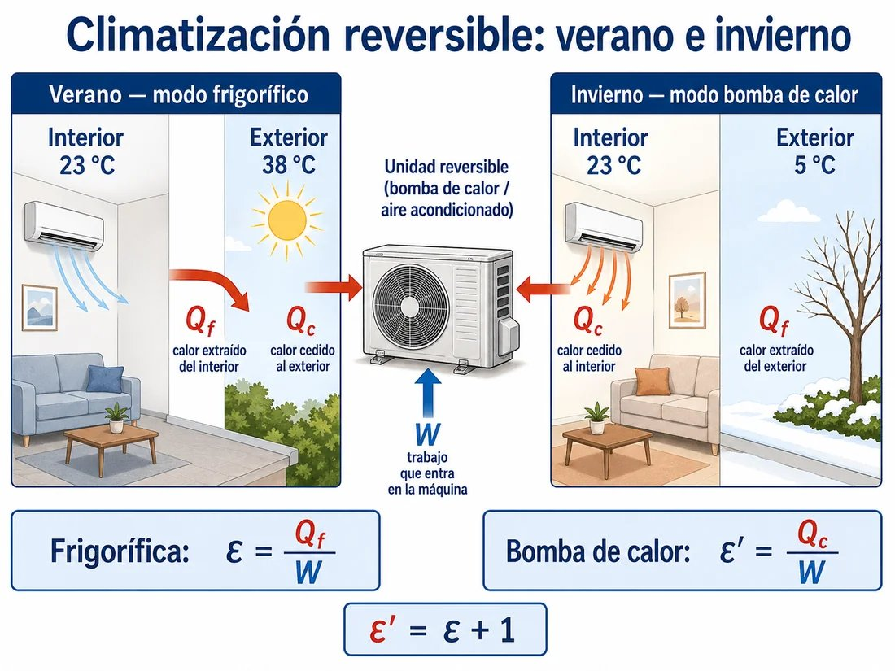
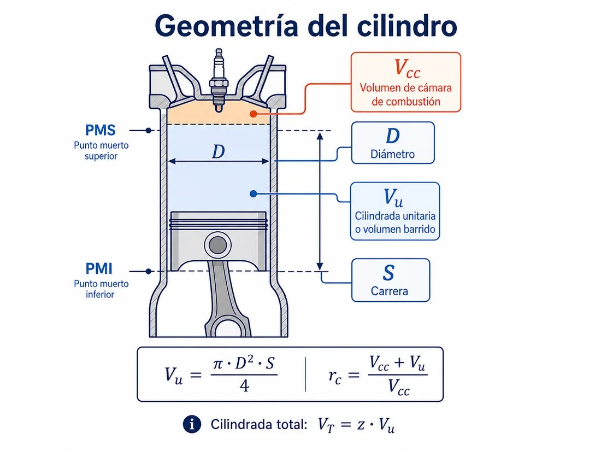
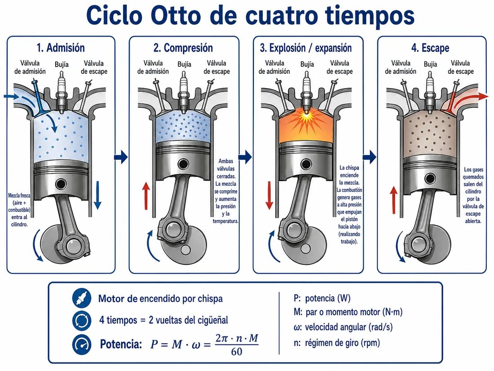
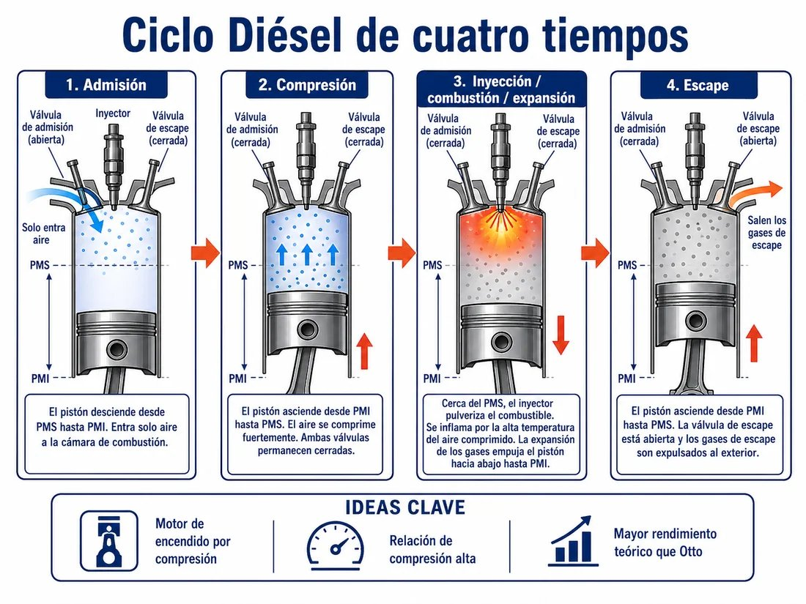
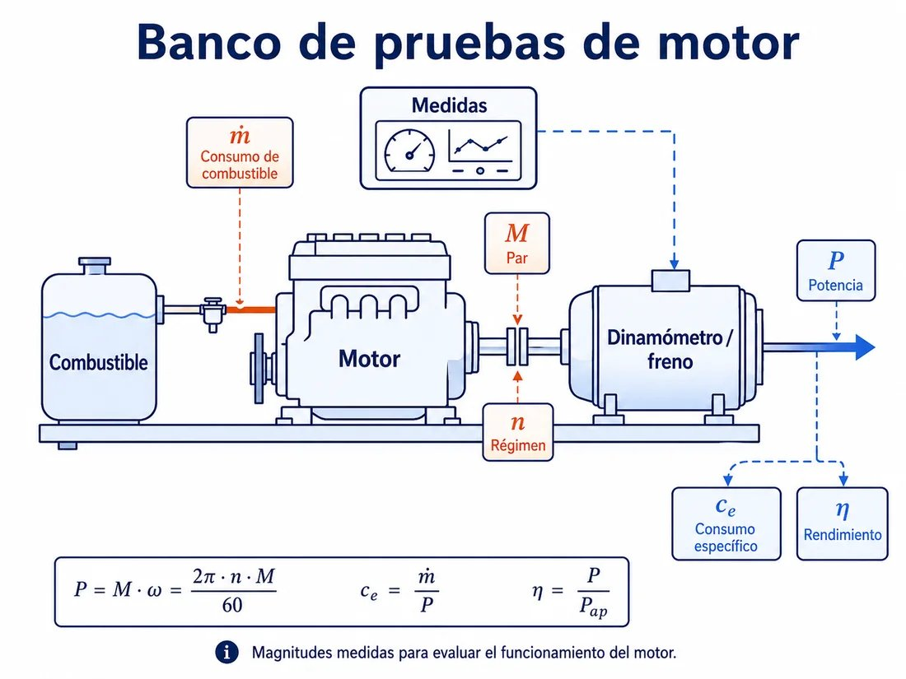
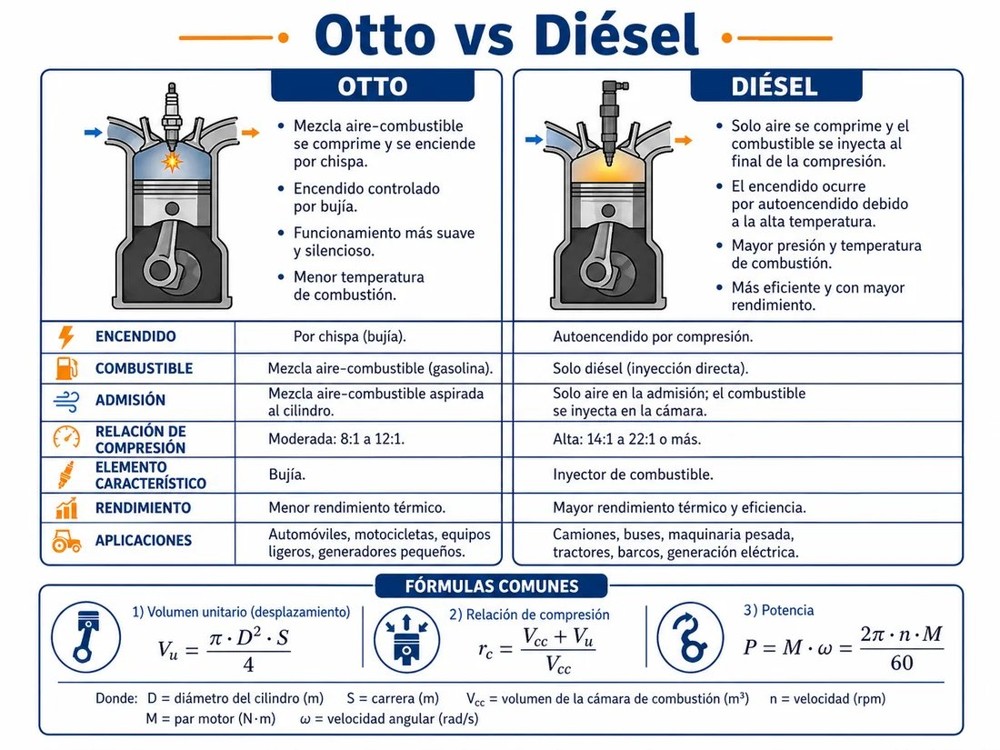

Tabla resumen de las fórmulas que se utilizan en los ejercicios. Convertir siempre a Kelvin (T[K] = T[°C] + 273) antes de aplicar cualquier fórmula con temperaturas.
| Tipo de máquina | Magnitud útil | Eficiencia / rendimiento ideal | Notas |
|---|---|---|---|
| Motor térmico (Carnot) | Trabajo \(W\) | \(\eta_C = 1 - \dfrac{T_f}{T_c}\) | \(Q_c = W + Q_f\) |
| Frigorífica | Calor extraído \(Q_f\) | \(\varepsilon_F = \dfrac{T_f}{T_c - T_f}\) | \(W = Q_f / \varepsilon\) |
| Bomba de calor | Calor cedido \(Q_c\) | \(\varepsilon'_{BC} = \dfrac{T_c}{T_c - T_f}\) | \(\varepsilon' = \varepsilon + 1\) |
| Ciclo Otto teórico | Trabajo neto | \(\eta_{Otto} = 1 - \dfrac{1}{r_c^{\,\gamma-1}}\) | Solo depende de \(r_c\) y \(\gamma\) |
| Ciclo Diésel teórico | Trabajo neto | \(\eta_{D} = 1 - \dfrac{1}{r_c^{\,\gamma-1}} \cdot \dfrac{r_a^{\,\gamma}-1}{\gamma\,(r_a-1)}\) | \(r_a\) = relación de inyección |
| Magnitud | Fórmula | Magnitud | Fórmula |
|---|---|---|---|
| Cilindrada unitaria | \(V_u = \dfrac{\pi \cdot D^2 \cdot S}{4}\) | Cilindrada total | \(V_T = z \cdot V_u\) |
| Relación de compresión | \(r_c = \dfrac{V_{cc} + V_u}{V_{cc}}\) | Vol. cámara combustión | \(V_{cc} = \dfrac{V_u}{r_c - 1}\) |
| Velocidad angular | \(\omega = \dfrac{2\pi \cdot n}{60}\) [rad/s] | Potencia efectiva | \(P = M \cdot \omega\) |
| Consumo específico | \(c_e = \dfrac{\dot{m}\,[\text{g/h}]}{P\,[\text{kW}]}\) | Rendimiento global | \(\eta = \dfrac{P}{\dot{m} \cdot P_c}\) |
Notación unificada: \(V_u\) = cilindrada unitaria · \(V_T\) = total · \(V_{cc}\) = cámara de combustión · \(r_c\) = relación de compresión · \(D\) = diámetro · \(S\) = carrera · \(z\) = nº cilindros · \(\gamma\) = coef. adiabático.


Una central de biomasa opera un ciclo de Carnot entre una fuente caliente a \(T_c = 327\) °C y un foco frío a \(T_f = 57\) °C. El trabajo obtenido por ciclo es \(W = 0,9\) kJ. El poder calorífico de la biomasa utilizada es \(P_c = 15\,000\) kJ/kg.
a) Calcula el rendimiento del ciclo de Carnot.
b) Determina \(Q_c\) y \(Q_f\) por ciclo.
c) Calcula el consumo de biomasa por ciclo en gramos.
$$T_c = 327 + 273 = 600\ \text{K} \qquad T_f = 57 + 273 = 330\ \text{K}$$
$$\eta = 1 - \frac{T_f}{T_c} = 1 - \frac{330}{600} = 0{,}45 = 45\,\%$$
De \(\eta = W/Q_c\) se despeja:
$$Q_c = \frac{W}{\eta} = \frac{900\ \text{J}}{0{,}45} = 2\,000\ \text{J}$$
Y por el balance \(Q_c = W + Q_f\):
$$Q_f = Q_c - W = 2\,000 - 900 = 1\,100\ \text{J}$$
$$m = \frac{Q_c}{P_c} = \frac{2\,000\ \text{J}}{15\,000\,000\ \text{J/kg}} = 1{,}33 \times 10^{-4}\ \text{kg} = 0{,}133\ \text{g/ciclo}$$
CRÍTICO: convertir SIEMPRE °C a K antes de calcular \(\eta_{Carnot}\). \(T[K] = T[°C] + 273\).
\(Q_c = W/\eta\) (no \(\eta \cdot W\)). Es el calor que hay que pagar al foco caliente para obtener el trabajo \(W\).
Coherencia de unidades: \(W\) en J y \(P_c\) en J/kg, o bien \(W\) en kJ y \(P_c\) en kJ/kg.
Un supermercado de Granada utiliza una cámara frigorífica para conservar productos congelados a \(T_f = -18\) °C. La sala donde se ubica la cámara está a \(T_c = 27\) °C. La máquina extrae \(Q_f = 1\,200\) kJ/h del interior. La eficiencia real es el 60 % de la ideal de Carnot.
a) Calcula la eficiencia ideal y real del frigorífico.
b) Determina el trabajo absorbido por el compresor en una hora y la potencia eléctrica del motor.
c) Calcula el calor cedido al exterior en una hora.
$$T_f = -18 + 273 = 255\ \text{K} \qquad T_c = 27 + 273 = 300\ \text{K}$$
$$\varepsilon_{ideal} = \frac{T_f}{T_c - T_f} = \frac{255}{300 - 255} = \frac{255}{45} = 5{,}67$$
$$\varepsilon_{real} = 0{,}60 \times 5{,}67 = 3{,}40$$
$$W = \frac{Q_f}{\varepsilon_{real}} = \frac{1\,200\ \text{kJ/h}}{3{,}40} \approx 352{,}9\ \text{kJ/h}$$
$$P = \frac{W}{t} = \frac{352\,900\ \text{J}}{3\,600\ \text{s}} \approx 98\ \text{W}$$
$$Q_c = Q_f + W = 1\,200 + 352{,}9 \approx 1\,552{,}9\ \text{kJ/h}$$
Frigorífica: \(\varepsilon = Q_f/W = T_f/(T_c - T_f)\). Energía útil = \(Q_f\) (lo que extrae del frío).
El calor cedido al exterior \(Q_c = Q_f + W\) es siempre mayor que el extraído. Por eso un aire acondicionado calienta tu portal en verano.
Un hotel rural en Sierra Nevada climatiza su interior a \(T_c = 22\) °C cuando el exterior está a \(T_f = -3\) °C. La bomba de calor aporta \(Q_c = 90\,000\) J/min al interior. La eficiencia real es un tercio de la ideal de Carnot.
a) Calcula la eficiencia ideal y real de la bomba de calor.
b) Determina el trabajo absorbido por el compresor en un minuto y la potencia.
c) Calcula el calor extraído del exterior en una hora.
$$T_c = 295\ \text{K} \qquad T_f = 270\ \text{K}$$
$$\varepsilon'_{ideal} = \frac{T_c}{T_c - T_f} = \frac{295}{25} = 11{,}8$$
$$\varepsilon'_{real} = \frac{11{,}8}{3} \approx 3{,}93$$
$$W = \frac{Q_c}{\varepsilon'_{real}} = \frac{90\,000\ \text{J/min}}{3{,}93} \approx 22\,901\ \text{J/min}$$
$$P = \frac{W}{60\ \text{s}} = \frac{22\,901}{60} \approx 382\ \text{W}$$
Por minuto, el calor extraído del exterior es \(Q_f = Q_c - W\); en una hora multiplicamos por 60:
$$Q_f(1\,h) = (Q_c - W) \times 60 = (90\,000 - 22\,901) \times 60 \approx 4\,026\,000\ \text{J}$$
Bomba de calor: \(\varepsilon' = Q_c/W = T_c/(T_c - T_f)\). Energía útil = \(Q_c\) (calor entregado al interior).
Relación clave: \(\varepsilon' = \varepsilon + 1\). La bomba siempre entrega más calor del que consume en trabajo eléctrico.
La climatización de la Biblioteca Pública de Sevilla se realiza con una máquina térmica reversible: frigorífico en verano y bomba de calor en invierno. La temperatura interior de consigna es de 23 °C; las temperaturas exteriores representativas son 38 °C en verano y 5 °C en invierno. La eficiencia real es el 35 % de la ideal de Carnot. El compresor consume una potencia eléctrica de \(P = 4\) kW y la instalación trabaja 8 h/día.
a) Calcula la eficiencia real funcionando como frigorífico (verano) y como bomba de calor (invierno).
b) Determina el calor extraído del local a lo largo de un día de verano.
c) Determina el calor aportado al local a lo largo de un día de invierno.

$$T_{int} = 296\ \text{K} \qquad T_{ver} = 311\ \text{K} \qquad T_{inv} = 278\ \text{K}$$
Verano (frigorífico): el foco frío es el interior, \(T_f = T_{int} = 296\) K.
$$\varepsilon_{ideal}(ver) = \frac{T_{int}}{T_{ver} - T_{int}} = \frac{296}{15} = 19{,}73$$
$$\varepsilon_{real}(ver) = 0{,}35 \times 19{,}73 = 6{,}91$$
Invierno (bomba de calor): el foco caliente es el interior, \(T_c = T_{int} = 296\) K.
$$\varepsilon'_{ideal}(inv) = \frac{T_{int}}{T_{int} - T_{inv}} = \frac{296}{18} = 16{,}44$$
$$\varepsilon'_{real}(inv) = 0{,}35 \times 16{,}44 = 5{,}75$$
$$W_{día} = P \cdot t = 4\ \text{kW} \times 8\ \text{h} = 32\ \text{kWh} = 115\,200\ \text{kJ}$$
$$Q_f(ver) = \varepsilon_{real} \cdot W = 6{,}91 \times 115\,200 \approx 796\,032\ \text{kJ}$$
$$Q_c(inv) = \varepsilon'_{real} \cdot W = 5{,}75 \times 115\,200 \approx 662\,400\ \text{kJ}$$
Verano: el foco frío es el interior → \(T_f = T_{int}\). Magnitud útil = \(Q_f\).
Invierno: el foco caliente es el interior → \(T_c = T_{int}\). Magnitud útil = \(Q_c\).
El compresor es el mismo: la diferencia es la dirección del flujo, gestionada por válvulas inversoras.
Tipo frecuente PEvAU 2024-2025. Modelo del examen Ponencia 2025-26.
Se realiza un viaje de dos horas en un quad equipado con un motor Otto bicilíndrico de cuatro tiempos. Datos:
a) Calcular la carrera del cilindro \(S\) y el volumen de la cámara de combustión \(V_{cc}\).
b) Calcular el trabajo desarrollado en el viaje, suponiendo el motor a potencia máxima todo el trayecto.
c) Calcular el rendimiento teórico del ciclo Otto.

Cilindrada unitaria con \(z = 2\) cilindros:
$$V_u = \frac{V_T}{z} = \frac{500}{2} = 250\ \text{cm}^3$$
Carrera (despejando de \(V_u = \pi D^2 S/4\), con \(D = 6\) cm):
$$S = \frac{4 \cdot V_u}{\pi \cdot D^2} = \frac{4 \times 250}{\pi \times 36} = \frac{1000}{113{,}1} \approx 8{,}84\ \text{cm}$$
Volumen de la cámara de combustión:
$$V_{cc} = \frac{V_u}{r_c - 1} = \frac{250}{9} \approx 27{,}8\ \text{cm}^3$$
Velocidad angular a potencia máxima:
$$\omega = \frac{2\pi \cdot n}{60} = \frac{2\pi \times 5\,000}{60} \approx 523{,}6\ \text{rad/s}$$
Potencia máxima:
$$P = M \cdot \omega = 30 \times 523{,}6 \approx 15\,708\ \text{W} \approx 15{,}71\ \text{kW}$$
Trabajo en el viaje (\(t = 2\) h \(= 7\,200\) s):
$$W = P \cdot t = 15\,708 \times 7\,200 \approx 1{,}131 \times 10^{8}\ \text{J} \approx 113{,}1\ \text{MJ}$$
$$\eta_{Otto} = 1 - \frac{1}{r_c^{\,\gamma-1}} = 1 - \frac{1}{10^{0{,}4}} = 1 - \frac{1}{2{,}512} \approx 0{,}602$$
P = M·ω, con \(\omega = 2\pi n/60\). Para \(n = 5\,000\) rpm → \(\omega \approx 523{,}6\) rad/s.
W = P·t: convertir \(t\) a segundos (2 h = 7 200 s).
\(\eta_{Otto}\) solo depende de \(r_c\) y \(\gamma\), no del combustible ni del consumo.
Tipo Ponencia P2A: combina geometría (apartado a) + potencia/trabajo (b) + rendimiento teórico (c).
Un fabricante afirma haber diseñado una máquina térmica que opera entre un foco caliente a 527 °C y un foco frío a 27 °C. La máquina absorbe \(Q_c = 800\) kJ del foco caliente y produce un trabajo de \(W = 400\) kJ.
a) Calcular el rendimiento teórico de Carnot entre esas temperaturas.
b) Calcular el rendimiento real declarado y razonar si la máquina viola o no el 2º principio de la termodinámica.
c) El fabricante afirma que con la misma fuente puede obtener \(W' = 600\) kJ de trabajo. Razonar si esto es posible.
$$T_c = 800\ \text{K} \qquad T_f = 300\ \text{K}$$
$$\eta_{Carnot} = 1 - \frac{T_f}{T_c} = 1 - \frac{300}{800} = 0{,}625 = 62{,}5\,\%$$
$$\eta_{real} = \frac{W}{Q_c} = \frac{400}{800} = 0{,}50 = 50\,\%$$
Como \(\eta_{real} = 50\,\% < \eta_{Carnot} = 62{,}5\,\%\), la afirmación es compatible con el 2º principio.
$$\eta' = \frac{W'}{Q_c} = \frac{600}{800} = 0{,}75 = 75\,\%$$
Como \(\eta' = 75\,\% > \eta_{Carnot} = 62{,}5\,\%\), la afirmación viola el 2º principio y es termodinámicamente imposible.
Regla: si \(\eta_{real} \le \eta_{Carnot}\) → posible; si \(\eta_{real} > \eta_{Carnot}\) → imposible.
Convertir SIEMPRE °C a K antes de calcular \(\eta_{Carnot} = 1 - T_f/T_c\).
Es un tipo recurrente en PEvAU para evaluar la comprensión conceptual del 2º principio.
Un motor Otto de cuatro cilindros y \(V_T = 1\,800\) cm³ tiene un diámetro de cilindro \(D = 75\) mm y un volumen de cámara de combustión \(V_{cc} = 41\) cm³. El coeficiente adiabático del combustible es \(\gamma = 1{,}4\).
a) Calcular la cilindrada unitaria y la relación de compresión del motor.
b) Calcular el rendimiento teórico del ciclo Otto.
c) Calcular la carrera de los cilindros.

$$V_u = \frac{V_T}{z} = \frac{1\,800}{4} = 450\ \text{cm}^3$$
$$r_c = \frac{V_{cc} + V_u}{V_{cc}} = \frac{41 + 450}{41} = \frac{491}{41} \approx 11{,}98 \approx 12{:}1$$
Fórmula del ciclo Otto ideal (procesos adiabáticos):
$$\eta_{Otto} = 1 - \frac{1}{r_c^{\,\gamma-1}} = 1 - r_c^{\,1-\gamma}$$
Con \(r_c = 11{,}98\) y \(\gamma - 1 = 0{,}4\):
$$r_c^{\,0{,}4} = 11{,}98^{0{,}4} = e^{0{,}4 \cdot \ln 11{,}98} = e^{0{,}4 \times 2{,}483} = e^{0{,}993} \approx 2{,}699$$
$$\eta_{Otto} = 1 - \frac{1}{2{,}699} = 1 - 0{,}370 = 0{,}630$$
De \(V_u = \pi D^2 S/4\):
$$S = \frac{4 \cdot V_u}{\pi \cdot D^2} = \frac{4 \times 450}{\pi \times 7{,}5^2} = \frac{1\,800}{176{,}71} \approx 10{,}19\ \text{cm} = 101{,}9\ \text{mm}$$
Fórmula clave: \(\eta_{Otto} = 1 - 1/r_c^{\gamma-1}\). El rendimiento teórico solo depende de \(r_c\) y \(\gamma\), no del combustible ni del consumo.
Calcular el exponente \((\gamma - 1) = 0{,}4\) y aplicar \(r_c^{0{,}4}\) usando la calculadora científica directamente.
Un motor Otto de cuatro cilindros tiene una relación de compresión \(r_c = 10:1\) y un volumen de cámara de combustión \(V_{cc} = 25\) cm³. Alcanza un par máximo de \(M = 350\) N·m a \(n = 2\,500\) rpm consumiendo \(20\) l/h de un combustible de densidad \(\rho = 0{,}85\) kg/l y poder calorífico \(P_c = 41\,400\) kJ/kg. La carrera es \(S = 1{,}5\,D\).
a) Calcular la cilindrada unitaria y total. Determinar el diámetro \(D\) y la carrera \(S\).
b) Calcular la potencia desarrollada y el rendimiento del motor.
De la relación de compresión:
$$r_c = \frac{V_{cc} + V_u}{V_{cc}} \;\Rightarrow\; 10 = \frac{25 + V_u}{25} \;\Rightarrow\; V_u = 250 - 25 = 225\ \text{cm}^3$$
$$V_T = z \cdot V_u = 4 \times 225 = 900\ \text{cm}^3$$
Sustituyendo \(S = 1{,}5\,D\) en \(V_u = \pi D^2 S/4\):
$$V_u = \frac{\pi \cdot D^2 \cdot 1{,}5\,D}{4} = \frac{1{,}5\pi \cdot D^3}{4}$$
$$D^3 = \frac{4 \cdot V_u}{1{,}5\pi} = \frac{4 \times 225}{1{,}5 \times 3{,}1416} = \frac{900}{4{,}712} \approx 191{,}06\ \text{cm}^3$$
$$D = \sqrt[3]{191{,}06} \approx 5{,}76\ \text{cm} = 57{,}6\ \text{mm}$$
$$S = 1{,}5 \times 57{,}6 = 86{,}4\ \text{mm}$$
Potencia efectiva (par y régimen):
$$P = M \cdot \omega = M \cdot \frac{2\pi n}{60} = \frac{350 \times 2\,500 \times 2\pi}{60} \approx 91\,629\ \text{W} \approx 91{,}63\ \text{kW}$$
Energía térmica aportada por el combustible:
$$\dot{m} = 20\ \text{l/h} \times 0{,}85\ \text{kg/l} = 17{,}0\ \text{kg/h}$$
$$P_{ap} = \frac{\dot{m}}{3\,600} \cdot P_c = \frac{17{,}0}{3\,600} \times 41\,400 \approx 195{,}5\ \text{kW}$$
Rendimiento:
$$\eta = \frac{P}{P_{ap}} = \frac{91{,}63}{195{,}5} \approx 0{,}469 = 46{,}9\,\%$$
Con \(S = k \cdot D\): sustituir \(S\) en \(V_u\), llegar a una expresión en \(D^3\) y aplicar raíz cúbica. Verificar después que \(V_u = \pi D^2 S/4\) coincide con el dato.
Conversión clave: \(l/h \to kg/h \to kg/s\) antes de aplicar \(P_c\) en J/kg (o trabajar todo en kJ/h y convertir el resultado final a kW).
No confundir potencia útil \(P\) (la del cigüeñal) con potencia aportada \(P_{ap}\) (la del combustible quemado). El rendimiento es la relación entre ambas.
Un taller de vehículos industriales de Cádiz ensaya en banco un motor Diésel de 4 cilindros y 4 tiempos: \(D = 60\) mm, carrera \(S = 90\) mm, \(r_c = 20:1\). El motor desarrolla un par \(M = 53\) N·m con una potencia \(P = 20\) kW. El coeficiente adiabático es \(\gamma = 1{,}4\) y se asume una relación de inyección típica \(r_a = 2{,}0\).
a) Calcular el volumen de la cámara de combustión y la cilindrada total del motor.
b) Calcular el régimen de giro en rpm.
c) Calcular el rendimiento teórico del ciclo Diésel y compararlo con el de un Otto de igual \(r_c\).

Cilindrada unitaria:
$$V_u = \frac{\pi D^2 S}{4} = \frac{\pi \times 60^2 \times 90}{4} = 254\,469\ \text{mm}^3 \approx 254{,}5\ \text{cm}^3$$
Volumen de la cámara de combustión:
$$V_{cc} = \frac{V_u}{r_c - 1} = \frac{254{,}5}{19} \approx 13{,}4\ \text{cm}^3$$
Cilindrada total:
$$V_T = z \cdot V_u = 4 \times 254{,}5 = 1\,018\ \text{cm}^3 \approx 1{,}02\ \text{L}$$
De \(P = M \cdot \omega = M \cdot 2\pi n/60\), despejando \(n\) en rev/s:
$$n = \frac{P}{2\pi \cdot M} = \frac{20\,000}{2\pi \times 53} = \frac{20\,000}{333{,}0} \approx 60{,}07\ \text{rev/s}$$
Pasando a rpm:
$$n = 60{,}07 \times 60 \approx 3\,604\ \text{rpm}$$
Fórmula del ciclo Diésel ideal:
$$\eta_{D} = 1 - \frac{1}{r_c^{\,\gamma-1}} \cdot \frac{r_a^{\,\gamma} - 1}{\gamma\,(r_a - 1)}$$
Cálculos auxiliares:
$$r_c^{0{,}4} = 20^{0{,}4} \approx 3{,}314 \qquad r_a^{1{,}4} = 2^{1{,}4} \approx 2{,}639$$
$$\frac{r_a^{\,\gamma} - 1}{\gamma\,(r_a - 1)} = \frac{2{,}639 - 1}{1{,}4 \times 1} = \frac{1{,}639}{1{,}4} \approx 1{,}171$$
$$\eta_{D} = 1 - \frac{1}{3{,}314} \times 1{,}171 = 1 - 0{,}353 \approx 0{,}647$$
Comparación con un Otto de \(r_c = 20\):
$$\eta_{Otto} = 1 - \frac{1}{r_c^{\,\gamma-1}} = 1 - \frac{1}{3{,}314} \approx 0{,}698$$
Diésel vs Otto: a igual \(r_c\), el Otto teórico es ligeramente más eficiente. Pero el Diésel admite \(r_c\) mucho mayores (14-22 vs 8-12) sin autoencendido prematuro, por lo que en la práctica el Diésel suele ser más eficiente.
Vcc = Vu/(rc−1), NO \(V_u/r_c\). Cuidado con el denominador.
Unidades: \(P\) en W, \(M\) en N·m → \(n\) en rev/s. Multiplicar por 60 para rpm.
Un fabricante está probando el prototipo de un nuevo motor de combustión 4T en un banco de pruebas, obteniéndose:
a) La potencia que está suministrando el motor y el consumo específico expresado en g/(kW·h).
b) El rendimiento.

Potencia efectiva:
$$\omega = \frac{2\pi n}{60} = \frac{2\pi \times 2\,750}{60} \approx 287{,}98\ \text{rad/s}$$
$$P = M \cdot \omega = 110 \times 287{,}98 \approx 31\,678\ \text{W} \approx 31{,}68\ \text{kW}$$
Consumo específico:
$$\dot{m} = 9{,}5\ \text{l/h} \times 0{,}8\ \text{kg/l} = 7{,}6\ \text{kg/h} = 7\,600\ \text{g/h}$$
$$c_e = \frac{\dot{m}\,[\text{g/h}]}{P\,[\text{kW}]} = \frac{7\,600}{31{,}68} \approx 239{,}9\ \text{g/(kW·h)}$$
Potencia aportada por el combustible:
$$P_{ap} = \frac{\dot{m}}{3\,600} \cdot P_c = \frac{7{,}6}{3\,600} \times 41\,700 \approx 88{,}03\ \text{kW}$$
Rendimiento:
$$\eta = \frac{P}{P_{ap}} = \frac{31{,}68}{88{,}03} \approx 0{,}360 = 36{,}0\,\%$$
Es un valor razonable para un motor de combustión 4T (típicamente 25-40 %).
Consumo específico: \(c_e = \dot{m}[\text{g/h}]/P[\text{kW}]\). Cuanto menor es \(c_e\), más eficiente el motor. Motores actuales: 220-280 g/(kW·h).
Conversión clave: \(\dot{m}\) en kg/h → dividir entre 3 600 para tener kg/s antes de multiplicar por \(P_c\) [kJ/kg].
Coherencia de unidades: todo en kW o todo en W, pero no mezclar.
Una bomba de calor reversible climatiza una nave industrial de Málaga a \(T_{int} = 23\) °C en invierno. Tiene \(COP_{real} = 5\) y esa eficiencia es el 30 % de la ideal de Carnot. Calcular la temperatura media exterior.
$$COP_{ideal} = \frac{COP_{real}}{0{,}30} = \frac{5}{0{,}30} \approx 16{,}67$$
Con \(T_1 = 23 + 273 = 296\) K, de \(COP_{ideal} = T_1/(T_1 - T_2)\):
$$T_1 - T_2 = \frac{T_1}{COP_{ideal}} = \frac{296}{16{,}67} \approx 17{,}76\ \text{K}$$
$$T_2 = 296 - 17{,}76 \approx 278{,}24\ \text{K} \;\Rightarrow\; T_2 \approx 5\ \text{°C}$$
Verificar que el COP real (5) es inferior al COP ideal (16,67) obtenido:
$$COP_{real} = 5 < COP_{ideal} = 16{,}67 \;\checkmark$$
Calor cedido al interior por unidad de trabajo: \(Q_1 = COP_{BC} \cdot W = 5W\). Es decir, la bomba suministra 5 J de calor por cada 1 J de trabajo eléctrico, lo que la hace cinco veces más eficiente que una resistencia eléctrica directa.
Trabajar siempre en Kelvin en los cálculos. El resultado se puede expresar en °C restando 273.
Bomba de calor: \(COP_{BC} = T_c/(T_c - T_f)\). Frigorífica: \(\varepsilon_F = T_f/(T_c - T_f)\). No confundir cuál es el foco frío y cuál el caliente.
Un fabricante de Jaén anuncia un motor turbodiésel para una furgoneta comercial con las siguientes especificaciones en su punto de operación nominal:
a) Calcular la potencia desarrollada por el motor a 1 750 rpm.
b) Determinar el consumo horario en l/h y el rendimiento global del motor.
c) Estimar la autonomía (en horas) si trabajara constantemente a ese régimen con el depósito lleno.
$$\omega = \frac{2\pi n}{60} = \frac{2\pi \times 1\,750}{60} \approx 183{,}26\ \text{rad/s}$$
$$P = M \cdot \omega = 320 \times 183{,}26 \approx 58\,643\ \text{W} \approx 58{,}64\ \text{kW}$$
Consumo másico a partir del consumo específico:
$$\dot{m} = c_e \cdot P = 215\ \text{g/(kW·h)} \times 58{,}64\ \text{kW} \approx 12\,608\ \text{g/h} = 12{,}61\ \text{kg/h}$$
Consumo horario en litros:
$$\dot{V} = \frac{\dot{m}}{\rho} = \frac{12{,}61}{0{,}84} \approx 15{,}01\ \text{l/h}$$
Potencia aportada por el combustible:
$$P_{ap} = \frac{\dot{m}}{3\,600} \cdot P_c = \frac{12{,}61}{3\,600} \times 42\,600 \approx 149{,}2\ \text{kW}$$
Rendimiento global:
$$\eta = \frac{P}{P_{ap}} = \frac{58{,}64}{149{,}2} \approx 0{,}393 = 39{,}3\,\%$$
$$t_{aut} = \frac{V_{depósito}}{\dot{V}} = \frac{60\ \text{l}}{15{,}01\ \text{l/h}} \approx 4{,}0\ \text{h}$$
Camino de cálculo cuando dan \(c_e\): \(c_e \cdot P \to \dot{m}[\text{g/h}] \to \dot{m}[\text{kg/h}] \to \dot{V}[\text{l/h}]\) dividiendo por \(\rho\).
Verificación cruzada: también \(\eta = 3\,600/(c_e \cdot P_c) = 3\,600/(0{,}215 \times 42\,600) \approx 0{,}393\). Útil como comprobación rápida.
La autonomía teórica a régimen continuo es muy inferior a la real porque el motor solo opera al máximo en aceleraciones puntuales.
Un motor Diésel marino de cuatro cilindros tiene una relación de compresión \(r_c = 18:1\) y una relación de inyección (admisión) \(r_a = 2{,}2\). El coeficiente adiabático es \(\gamma = 1{,}4\).
a) Calcular el rendimiento teórico del ciclo Diésel.
b) Comparar con un Otto de igual \(r_c\) y \(\gamma\), y comentar el resultado.
c) Si el motor desarrolla \(P = 80\) kW reales, ¿cuál es la potencia teórica del ciclo si supusiéramos un rendimiento mecánico del 90 %?
Cálculos auxiliares:
$$r_c^{\,\gamma-1} = 18^{0{,}4} = e^{0{,}4 \ln 18} = e^{0{,}4 \times 2{,}890} = e^{1{,}156} \approx 3{,}178$$
$$r_a^{\,\gamma} = 2{,}2^{1{,}4} = e^{1{,}4 \ln 2{,}2} = e^{1{,}4 \times 0{,}7885} = e^{1{,}104} \approx 3{,}016$$
$$\frac{r_a^{\,\gamma} - 1}{\gamma\,(r_a - 1)} = \frac{3{,}016 - 1}{1{,}4 \times 1{,}2} = \frac{2{,}016}{1{,}68} \approx 1{,}200$$
Rendimiento Diésel:
$$\eta_D = 1 - \frac{1}{r_c^{\,\gamma-1}} \cdot \frac{r_a^{\,\gamma} - 1}{\gamma\,(r_a - 1)} = 1 - \frac{1{,}200}{3{,}178} = 1 - 0{,}378 \approx 0{,}622$$
$$\eta_{Otto} = 1 - \frac{1}{r_c^{\,\gamma-1}} = 1 - \frac{1}{3{,}178} \approx 0{,}685$$
Lectura técnica: a igual \(r_c\), el Otto teórico es siempre más eficiente que el Diésel. Pero los Otto reales no pueden superar \(r_c \approx 12\) (riesgo de detonación con gasolina), mientras que los Diésel admiten \(r_c = 16-22\). Por eso, en motores reales, el Diésel termina siendo más eficiente.
La potencia teórica del ciclo se relaciona con la efectiva mediante el rendimiento mecánico:
$$P_{teórica} = \frac{P_{efectiva}}{\eta_{mec}} = \frac{80}{0{,}90} \approx 88{,}9\ \text{kW}$$
Cadena de rendimientos: \(\eta_{global} = \eta_{ciclo} \cdot \eta_{combustión} \cdot \eta_{mec}\). En PEvAU casi siempre se simplifica a uno o dos factores.
\(r_a = V_3/V_2\) es la relación entre el volumen al final y al inicio de la combustión isobárica. Valores típicos: 1,5-2,5.
Una flota de servicios públicos en Almería compara dos vehículos para un mismo trayecto urbano. Ambos desarrollan una potencia útil de \(P = 50\) kW. Datos:
a) Calcular el consumo horario (l/h) de cada vehículo.
b) Calcular el consumo específico \(c_e\) de cada motor en g/(kW·h).
c) Tras 2 horas de servicio, ¿cuántos litros de combustible ha consumido cada uno y qué vehículo gasta menos?

Vehículo A (Otto):
$$P_{ap,A} = \frac{P}{\eta_A} = \frac{50}{0{,}28} \approx 178{,}57\ \text{kW}$$
$$\dot{m}_A = \frac{P_{ap,A}}{P_{c,A}} \cdot 3\,600 = \frac{178{,}57}{43\,800} \times 3\,600 \approx 14{,}68\ \text{kg/h}$$
$$\dot{V}_A = \frac{\dot{m}_A}{\rho_A} = \frac{14{,}68}{0{,}74} \approx 19{,}83\ \text{l/h}$$
Vehículo B (Diésel):
$$P_{ap,B} = \frac{P}{\eta_B} = \frac{50}{0{,}38} \approx 131{,}58\ \text{kW}$$
$$\dot{m}_B = \frac{131{,}58}{42\,500} \times 3\,600 \approx 11{,}15\ \text{kg/h}$$
$$\dot{V}_B = \frac{11{,}15}{0{,}84} \approx 13{,}27\ \text{l/h}$$
$$c_{e,A} = \frac{\dot{m}_A\,[\text{g/h}]}{P\,[\text{kW}]} = \frac{14\,680}{50} \approx 293{,}5\ \text{g/(kW·h)}$$
$$c_{e,B} = \frac{11\,150}{50} \approx 223{,}0\ \text{g/(kW·h)}$$
$$V_A = 19{,}83 \times 2 \approx 39{,}66\ \text{l} \qquad V_B = 13{,}27 \times 2 \approx 26{,}54\ \text{l}$$
Diferencia: \(V_A - V_B \approx 13{,}1\) litros menos para el Diésel en 2 h.
El menor consumo específico del Diésel se debe principalmente a su mayor \(\eta\) (más alta \(r_c\) y combustión más completa) y, en menor medida, al mayor poder calorífico volumétrico del gasóleo (\(P_c \cdot \rho\) es mayor en Diésel pese a tener menor \(P_c\) másico).
Este tipo de comparativa es útil para introducir, además, el coste por hora y la huella de CO₂ por kWh útil — extensiones naturales del problema.